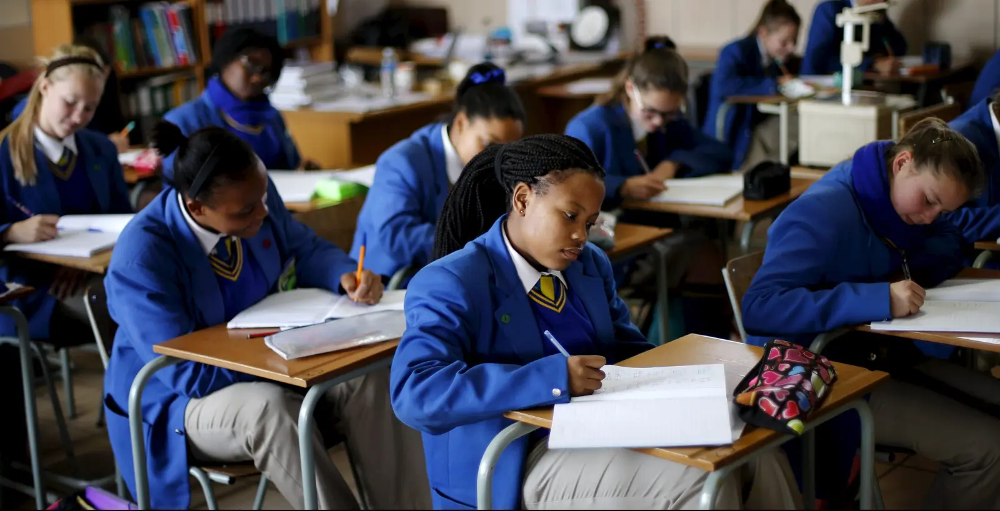

Tobex international high school is a four-year comprehensive high school
with approximately 5,300 students in grades nine through twelve. It is
fully accredited by the Indiana Department of Education and the North
Central Association Commission on Accreditation and School Improvement.
The high school is part of the Carmel Clay Schools District and--along
with three middle schools and eleven elementary schools--serves the city
of Carmel and the township of Clay in southwestern Hamilton County,
Indiana, just north of Indianapolis. In addition to eighteen counselors,
two media specialists, three nurses, and twelve administrators, the
professional staff at Carmel High School includes over 300 classroom
teachers. Over half the teachers have ten or more years professional
experience, and more than one in five have twenty or more years'
experience. Another 400 employees in a range of clerical, custodial,
food service, technical, and other support positions bring the total
high school staff up to over 700. A typical day of classes at Carmel
High School begins at 9:05 a.m. and ends at 4:05 p.m. Classes are
arranged on a block eight schedule of four 90-minute periods per regular
school day. One period of Student Support Resource Time (SSRT) is built
into each eight-block rotation. Four 27-minute lunch sessions are
offered during third block each day. Ten minutes is allowed for passing
periods between classes. This year students may attend a hybrid model
(in-person/virtual) or a virtual only model. Portions of the existing
Carmel High School facility were first opened in 1958. Significant
expansions and renovations were completed in 1961, 1969, 1977, 1999,
2005, and 2013. The CHS complex sits on 55 acres of land and has
1,046,572 square feet under roof on campus.
What happens at our school?
Students take ownership of their education through a variety of offerings aimed at addressing the individual needs of students. The campus' IB Diploma Programme is an academically challenging and balanced program that prepares students for success in higher education and beyond. Students that select to participate in the program will experience the essential strands of creativity, action and service interwoven in the fabric of the program.We put kids first
Our community of expert educators aim to develop internationally minded individuals who recognize their common humanity and shared global guardianship to help create a better and more peaceful world.Students will have access to:
- Multi-linguistic and intercultural curriculum
- Global engagement
- Cross-integrated lessons
- Integrated technology
- Exposure to college and career choices
- Flexible and collaborative learning spaces
- Career and technical education facilities
- Individualized learning
- Service learning